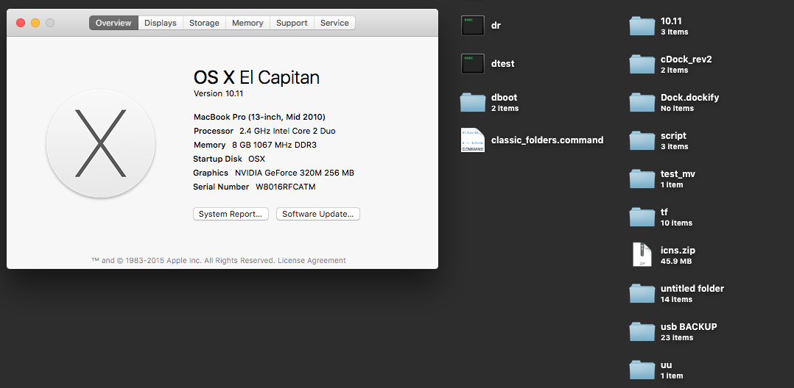

Classic Folders
Replace macOS folder icons with ones from Mavericks
Classic Folders is a simple script to bring back the old school Mavericks folders for newer versions of macOS.

- Supports macOS 10.9 to 10.15
- Download the latest release
- Unzip the download
- Disable System Integrity Protection
- Open classic_folders.command
- Follow instrutions printed to terminal window
- Re-enable System Integrity Protection